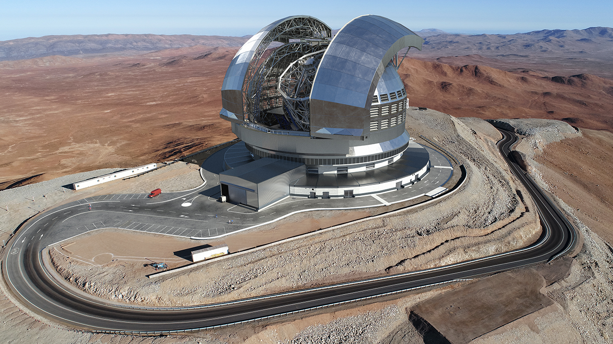

Featured Article
Astronomers Discover New 'Earth' Planet
In a groundbreaking discovery, astronomers have identified a new Earth-like exoplanet within the habitable zone of a nearby star system, raising hopes for the possibility of extraterrestrial life. The findings, announced today at a press conference by the International Astronomical Union (IAU), mark a significant leap forward in our understanding of the vast universe beyond our solar system.
The newfound exoplanet, dubbed Kepler-452g, shares several key similarities with Earth, including its size, composition, and distance from its host star. Situated in the habitable zone of the Kepler-452 system, approximately 1,400 light-years away from Earth, this exoplanet receives a similar amount of stellar energy from its sun-like star, offering the potential for liquid water to exist on its surface – a crucial factor for the emergence of life as we know it.
Telescope that found the New 'Earth'